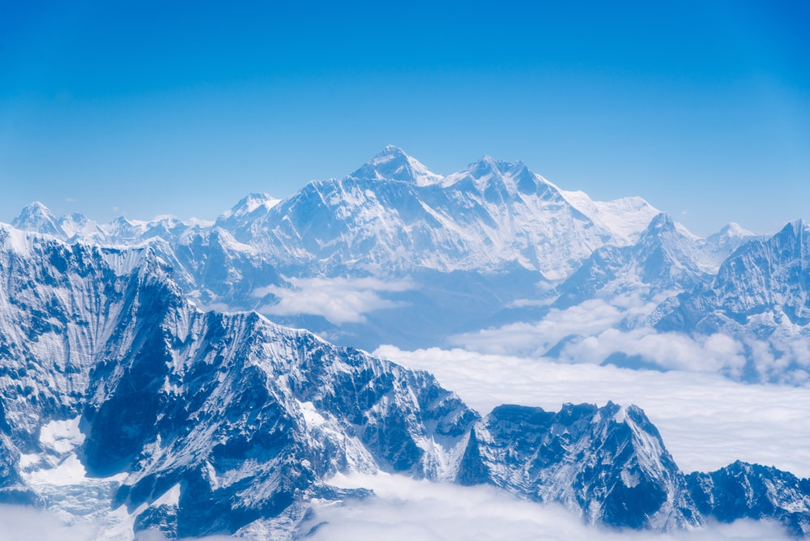

İsmim Ulaş Yağantekin 22 yaşındayım web geliştirici olmak istiyorum. Size hoşlandığım film, dizi, kitaplardan ve başarmak istediğim bir hedefimden bahsedeceğim.
30 yaşına gelmeden everest dağının zirvesine çıkmak kişisel hedeflerimden biri.
Everest Dağı (Tibetçe: ཇོ་མོ་གླང་མ, Çomolungma; Nepalce: सगरमाथा, Sagarmāthā), dünyanın deniz seviyesi üzerindeki en yüksek dağı. Himalayalarda, yaklaşık 28 derece kuzey enlemi ile 87 derece doğu boylamında, Çin-Nepal sınırı üzerinde yer alır. (Daha fazla detay için görsele tıklayınız.)